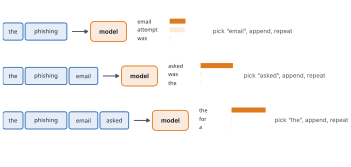
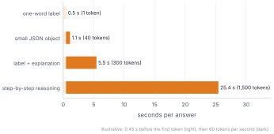
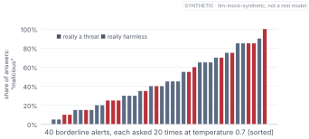
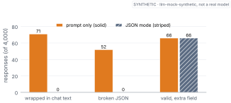
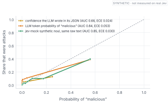
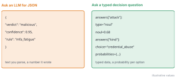

The limits of my language mean the limits of my world.
— Ludwig Wittgenstein, Tractatus Logico-Philosophicus, 1922
When ChatGPT answers you, the words appear a few at a time, as if someone were typing.
You’ve probably wondered whether that’s just a nice animation, with the whole answer sitting there, finished, revealed slowly for effect.
It isn’t. That’s genuinely how the model works. It doesn’t know the end of its sentence when it writes the beginning. It picks one small piece, then the next, each time looking back at everything so far.
That one detail explains a surprising amount: why long answers are slow, why the same question can get different answers, why you pay per token, and why “just ask the LLM” is an awkward way to make a decision. It also explains why getting a clean, trustworthy decision out of a writing machine is harder than adding “reply in JSON” to a prompt.
By the end of this chapter
Describe the generation loop: predict, pick, append, repeat.
Explain why answer length drives latency and cost, and why the same question can get different answers.
Recognise how “just ask for JSON” fails, and what constrained decoding does and doesn’t fix.
Compare three kinds of confidence: stated in the text, read from token probabilities, and returned by a decision model.
6.1 One token at a time
A language model reads tokens: chunks of text, often parts of words, made by a separate program called a tokeniser. Common words become one chunk; rare ones, like hostnames, typos and base64 blobs, the stuff security logs are made of, break into many small pieces. You pay per token, and numbers such as 0.87 or an IP address may be split in ways that don’t line up with their meaning, which is one reason LLMs can be clumsy with arithmetic.
Try it
A tiny tokeniser, trained on synthetic analyst notes in about a second.
notes = [" ".join(n) for n in text.notes_corpus(5000)]tok = llm.BPE().fit(notes, merges=150)for s in ["the ransomware was quarantined", "passw0rd reset"]:print(tok.tokenize(s))
Every time an LLM produces a token, it runs the same loop.

Figure 6.1: The generation loop. The model reads everything so far, produces a probability for every possible next token, one gets picked, it’s appended, and the loop runs again.
Read everything so far. Produce a probability for every token in the vocabulary, often around a hundred thousand of them. Pick one. Append it, and go round again (Figure fig-loop-06). The probability step is the transformer from Chapter 5, a writer that can only look backwards. Everything else is a loop around it.
The picking hides a choice. Always taking the most likely token, greedy decoding, is predictable but dull. Rolling a die weighted by the probabilities, sampling, gives variety. A setting called temperature controls how adventurous the die is: divide every score by T before turning scores into probabilities, so below 1 the favourites win more, and above 1 long shots get a real chance. (It’s the same temperature Chapter 3 used to soften overconfident models, pointed the other way.)
6.2 Length is time
Because each token waits for the one before it, generation is sequential: token fifty can’t exist before token forty-nine. So the length of the answer drives how long it takes.

Figure 6.2: How long an answer takes under simple, illustrative assumptions: a short wait before the first token, then a steady stream. A one-word label is fast. An explanation takes seconds. Step-by-step reasoning takes tens of seconds.
Assuming 0.45 seconds before the first token and 60 tokens a second after (illustrative, not measured), a one-word answer takes about 0.5 seconds, an explanation of a few hundred tokens about 5.5, and 1,500 tokens of step-by-step reasoning about 25 (Figure fig-latency-06). The newest “reasoning” models write long chains of thought before answering, which makes them much better on hard problems and much slower, because every thinking token goes through the loop. That trade-off, careful and slow against quick and intuitive, is the heart of Part III.
6.3 Same question, different answers
Sampling has another consequence, and for decisions it’s a big one. Ask the same question twice at any temperature above zero, and you might get two different answers. For a poem, that’s a feature. For deciding whether an alert is real, it’s a problem.
alert = soc.load().description[118]mock = llm.MockLLM(temperature=0.7)answers = [mock.classify(alert)["label"] for _ inrange(20)]print({a: answers.count(a) for a insorted(set(answers))})
{'benign': 11, 'malicious': 9}
That’s the book’s stand-in LLM, llm-mock-synthetic, built to behave the way LLMs typically do; it isn’t a model of any real product. Across forty borderline alerts, each asked twenty times, most got both answers.

Figure 6.3: Forty borderline alerts, each asked the same question twenty times at temperature 0.7. The bar shows how often the answer was “malicious”. All but one of them got different answers across the twenty runs.
In Figure fig-variance-06, 39 of the 40 alerts flipped. Set the temperature to zero and answers become much more repeatable, but the uncertainty doesn’t go away. It just stops showing.
Sampling turns a model’s uncertainty into randomness in its answers. Temperature zero hides it; it doesn’t remove it.
And nothing in the loop checks whether the sentence is true. The model produces a plausible next token. It can write a fluent, confident, completely made-up hostname or citation, because that’s the kind of thing that would come next. That’s hallucination.
On the Dangers of Stochastic Parrots: Can Language Models Be Too Big?
— Title of a 2021 paper by Emily Bender, Timnit Gebru, Angelina McMillan-Major and Margaret Mitchell
6.4 Asking for JSON
Software can’t read a paragraph. It needs verdict = "malicious": a field, a value. So every team wiring an LLM into a pipeline adds a line to the prompt: “Reply only with JSON.” And it works. Almost always.
But “almost” adds up. Over 4,000 alerts, 4.7% of the answers came back broken, wrapped or padded with an extra field. At seven hundred alerts a day, that’s about 33 failures every day.

Figure 6.4: What came back when we asked for JSON, over 4,000 alerts. With only the prompt, some responses were wrapped in friendly chat, some were cut off mid-object, and some were valid JSON with a field nobody asked for. With JSON mode on, the first two problems vanish. The third doesn’t.
The three classic failures are in Figure fig-json-failures: chatty text around the JSON (“Sure! Here is…”), a response cut off mid-object, and valid JSON with an invented field, here an attacker_country that isn’t in the alert at all. That last one is the worst, because it parses fine and quietly puts made-up data into your system.
The generation loop gives us a lever. At each step, we can forbid every token that would break the required format. That’s constrained decoding, sold as “JSON mode” or “structured outputs” (Willard and Louf 2023). It guarantees the shape of the answer.
Constrained decoding guarantees the shape of the answer, never its truth.
A constrained model can still say “benign” for a real attack, in perfect syntax. So whatever the provider promises, treat model output like text typed into a web form by a stranger. Parse it into a strict type that rejects unknown fields and wrong values, and if it fails, send the case to a person, never to an automatic action.
class Verdict(BaseModel): model_config = ConfigDict(extra="forbid") # invented fields fail verdict: Literal["malicious", "benign"] confidence: float rule: str threat_intel_score: float after_hours: bool related_alerts: intdef parse(raw):try:return Verdict.model_validate_json(raw)except ValidationError:returnNonetest = soc.load().sample(1000, random_state=0)ok =sum(parse(llm.MockLLM().structured(t)) isnotNonefor t in test.description)print(f"valid: {ok} of {len(test)}")
valid: 954 of 1000
6.5 Three confidences
Now say the JSON is perfect: "verdict": "malicious", "confidence": 0.95. Can Kestrel put a threshold on that 0.95?
There are three different numbers you might use. The confidence the model wrote is text: the characters “0”, “.”, “9”, “5”, picked like any other tokens. The token probability is the probability the model gave to “malicious” as the next token, which many APIs will return. And a probability from a decision model is one whose actual output is a probability for each option.

Figure 6.5: Reliability of three “confidences” on the same test alerts, all reading the same raw text. The stated confidence barely separates attacks from harmless alerts. The token probability ranks well but is overconfident. The decision model ranks best and also sits close to the diagonal. Synthetic: the mocks reflect design choices, not measurements of real models.
The mock wrote only 6 different confidence values, 98% of them 0.9 or higher, a pattern many people have noticed with real models. Stated confidence ranks poorly, with an AUC of 0.66. The token probability ranks much better (0.84) but is overconfident (ECE 0.053). The decision model ranks slightly better again (0.85) and is also well calibrated, with an ECE of 0.030 (Figure fig-three-confidences).
Look closely and the stated confidence has the lowest ECE of the three, 0.024. That isn’t a win. When a model says nearly the same thing about every alert, it can be right on average and still tell you almost nothing about which alert is which. It’s Chapter 3’s lesson again: calibration and ranking are separate, and you need both.
Research on real models is genuinely mixed here; one study found stated confidence better calibrated than token probabilities for some tuned models (Tian et al. 2023), another found it badly overconfident (Xiong et al. 2024). The only honest rule is to measure yours.
Why isn’t a token probability the probability of the answer? Because the model isn’t choosing between two answers. It’s choosing between tens of thousands of tokens. “malicious”, “Malicious” and ” malicious” with a space are all different tokens, and some probability goes to the model starting a sentence instead of answering. You can add up the right ones and renormalise, but by then you’re building a decision model by hand on top of a writing model.
The probability of a token isn’t the probability of an answer.
6.6 The typed alternative
Which brings us to a different way of asking. Instead of asking a writer to produce text in a decision-shaped format, ask a model whose native output is the decision. Declare the question and its possible answers as types, and get back data, with a probability for every option.

Figure 6.6: The same question, two ways. On the left, an LLM writes JSON, including a confidence it wrote as text. On the right, a typed question returns data: a probability for a yes-or-no question, and one for every label of a choice.
That’s what Jev’s interface looks like (Figure fig-typed-vs-text): nothing to parse, no format to break, labels that can only be the ones you listed, and a number designed to be a probability, which makes it a claim you can check. Part III takes it apart.
Where this breaks
Token probabilities describe the next piece of text, not the truth of the answer. JSON mode doesn’t stop a model choosing the wrong value or copying an attacker’s text into a field, and strict validation doesn’t catch a value that’s valid but wrong: a threat-intel score misread as 0.18 instead of 0.81 passes every schema. Providers update models, so “temperature 0” behaviour can shift between versions; pin versions for anything you’ll audit. And typed decision APIs have their own limits: probabilities without reasons, and calibration that still has to be tested on your data.
Set the threshold
Kestrel wants to auto-close alerts the LLM labels “benign” with stated confidence at least 0.95. Would you trust that line? What would you threshold instead?
(No. 0.95 and 0.99 are the mock’s favourite values, so the line filters almost nothing. Put the line on the best-calibrated probability you have, checked on recent history, with its position set by what mistakes cost, as Chapter 4 shows.)
6.7 Where we are
ChatGPT’s typing turned out to be the real mechanism: tokens come out one at a time, each chosen from a probability for every possible next piece. That loop explained why long answers are slow, why the same question can get different answers, and why fluent doesn’t mean true. Then we asked the loop for decisions. The format broke a few times in every hundred, constrained decoding fixed the format but not the content, and of three candidates for “how sure”, only one was designed to be thresholded.
An LLM also only knows what it was trained on, not your company. Next: giving it your documents, and letting it act.
Explain in your own words why generation can’t be parallelised the way reading can.
Using the illustrative latency numbers, how long would 10,000 alerts take to label one at a time with a one-word answer? With a 300-token explanation?
In the lab, change extra="forbid" to extra="ignore". What gets through now? When might that be acceptable?
Explain to a product manager, in three sentences, why "confidence": 0.95 in an LLM’s JSON can’t be used as a probability without testing.
Next: an LLM knows the internet, not your company. Retrieval hands it the right documents, agents let it act, and both open new ways to fail.
Tian, Katherine, Eric Mitchell, Allan Zhou, et al. 2023. ‘Just Ask for Calibration: Strategies for Eliciting Calibrated Confidence Scores from Language Models Fine-Tuned with Human Feedback’. Proceedings of EMNLP.
Willard, Brandon T., and Rémi Louf. 2023. Efficient Guided Generation for Large Language Models. https://arxiv.org/abs/2307.09702.
Xiong, Miao, Zhiyuan Hu, Xinyang Lu, et al. 2024. ‘Can LLMs Express Their Uncertainty? An Empirical Evaluation of Confidence Elicitation in LLMs’. International Conference on Learning Representations (ICLR).